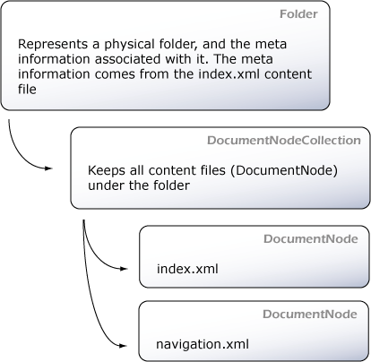

Table of contents
How Castle Anakia works
The sections below gives an overall explanation of the inner working of Castle Anakia.
The process
The NAnt task runs against a content folder, recursively. An object model is constructed and populated to reflect that structure. See the figure below.

Each physical folder will be represented by a Folder instance. A Folder holds a collection of DocumentNodes. Each DocumentNode has a type:
- Index: used for index.xml files
- Navigation: used for navigation.xml files
- Ordinary: used for all other xml files in the folder
A set of visitors transverse the object model to create the site map, breadcrumbs and finally the html files.
The transformation
The transformation of the xml content is handled by a NVelocity template. The following context entries are made available to the template:
| Context entry name | Description |
| breadcrumbs | List of BreadCrumb instances. Each BreadCrumb has a Title and a Relative property that allow you to generate the links |
| meta | Instance of DocumentMeta which is created for each document content based on the properties node |
| root | The XmlElement for the current content file |
| node | The DocumentNode instance for the content file |
| sitemap | A XmlElement for the generated sitemap |
| project | A XmlElement for the project.xml |
| folder | The Folder instance |
| converter | An instance of SimpleConverter that is able to convert strings to different types |
| helper | An instance of SimpleHelper |
| navigation | A XmlElement with the content of navigation.xml |
| relativePath | The relative path to access the root folder. |